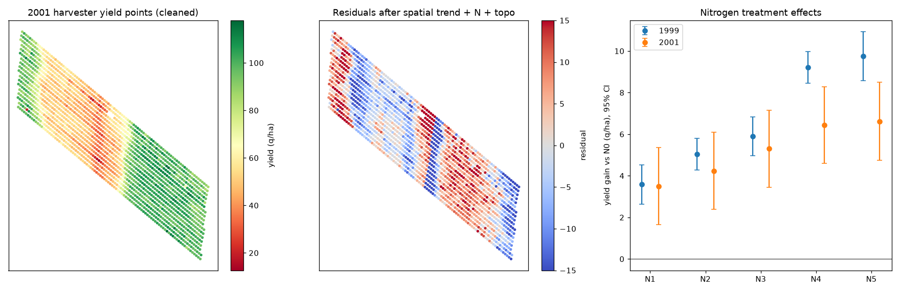

A worked example of the workflow for analysing harvester yield-monitor data from field trials. It uses a real public dataset: the Las Rosas corn trial (Córdoba, Argentina, 1999 and 2001), with about 3,400 GPS yield points, six nitrogen rates (N0–N5) in replicated strips, and topographic zones. Source: R package agridat, lasrosas.corn (Anselin, Bongiovanni & Lowenberg-DeBoer 2004).

| Year | Points | Moran's I of residuals, non-spatial model | Moran's I after spatial trend | Residual SD (q/ha) | N effect vs N0, q/ha [95% CI] | Yield points per treatment for 80% power |
|---|---|---|---|---|---|---|
| 1999 | 1738 | 0.55 (p=0.001) | 0.28 (p=0.001) | 4.2 | N1: +3.6 [+2.6, +4.5], N2: +5.0 [+4.3, +5.8], N3: +5.9 [+5.0, +6.8], N4: +9.2 [+8.5, +10.0], N5: +9.7 [+8.6, +10.9] | 2 q/ha → 71, 3 q/ha → 32, 5 q/ha → 13 |
| 2001 | 1705 | 0.80 (p=0.001) | 0.71 (p=0.001) | 11.2 | N1: +3.5 [+1.6, +5.4], N2: +4.2 [+2.4, +6.1], N3: +5.3 [+3.4, +7.2], N4: +6.4 [+4.6, +8.3], N5: +6.6 [+4.7, +8.5] | 2 q/ha → 496, 3 q/ha → 221, 5 q/ha → 81 |
A reproducible R/Python pipeline in Git: raw yield cleaning (with a log of every removed point), as-applied map and strip-layout joins, soil, weather and NDVI covariates, spatial mixed models with random effects for field and strip and sensitivity checks, a power and replicate-number calculator for next season, and a plain-English report per batch for agronomists.
Prepared by Nurtac Suleymanzade, PhD (Geography): GIS & spatial analysis. Built with Python (geopandas, rasterio, statsmodels, PySAL). Portfolio home